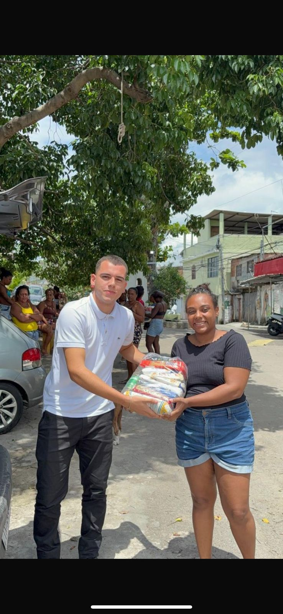
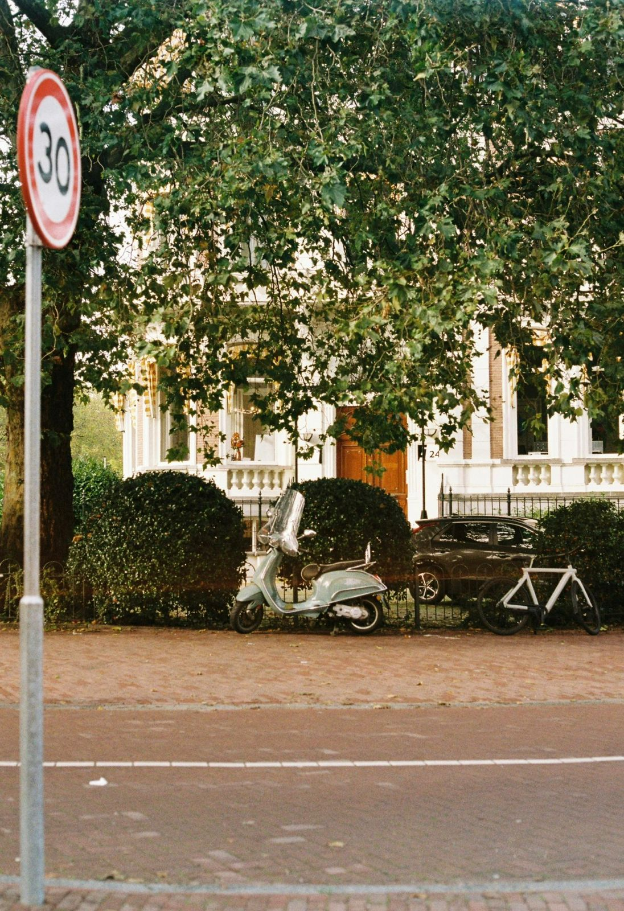

Projeto Morro do Cavalão
O Projeto Morro do Cavalão nasceu com o propósito de levar acolhimento e dignidade a mulheres e mães atípicas em situação de vulnerabilidade social.
Realizado durante o período do Natal Solidário, o projeto promoveu a doação de cestas básicas, levando não apenas alimento, mas também cuidado, empatia e esperança.
A ação reforça o compromisso da Força Coletiva em estar presente onde a necessidade é maior, fortalecendo vínculos comunitários e espalhando solidariedade.

Projeto Ruas do Centro de Niterói
O Projeto Ruas do Centro de Niterói foi criado para levar apoio, escuta e acolhimento às pessoas em situação de rua, especialmente durante períodos de frio intenso.
A ação contou com a entrega de kits de higiene, alimentos e palavras de conforto, oferecendo não apenas assistência material, mas também atenção humana.
Por meio dessa iniciativa, a Força Coletiva reafirma seu compromisso com o cuidado social, levando esperança àqueles que muitas vezes são invisibilizados.